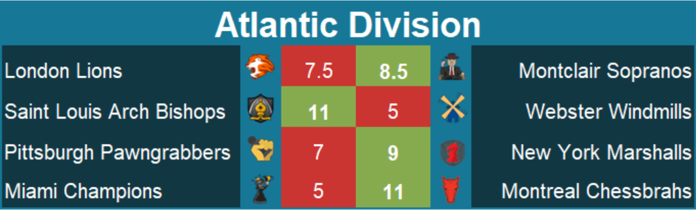

PRO Chess League Power Rankings
Week 2: Atlantic Division

Welcome to week two of the PRO Chess League power rankings. This week was very exciting, and although the scores for this round may not reflect it, there were a lot of very interesting games. Despite the imbalance in the standings through two weeks, this is probably the most balanced Atlantic division since the start of the PRO Chess League. I feel like every team could be in contention for a playoff spot, and on any given week I think that any team could beat any other. To me, that’s awesome because it will create a very tense division and (hopefully) will keep fans excited about matches from week to week. Speaking of exciting, how about this beautiful combination from Eric Hansen to trap Eljanov's rook! This is the kind of play that makes me really love chess.
PRO Chess League Overview
This year, we will be doing a weekly power rankings list for teams in the Atlantic division. For those of you who don't know, the regular season of the PRO Chess League (PCL) is ten weeks long. Each week, teams will have to pick 4 players from their roster with an average standard rating (not blitz or rapid) of 2500 FIDE or less for each match. Every match consists of 16 games (aside from the Battle Royales) meaning every player plays 4 games, on rapid time control (15 minutes with a 2-second increment). At the end of the match, the winner of the match receives ten points for the win. Each will also earn as many points as points they earned in the match (i.e. If team A defeats team B 10.5-5.5, team A receives 20.5 points and team B receives 5.5 points). This means that every game matters, so even if a team has already lost, there is still reason to keep playing. If anything that I wrote was unclear, you can always see the
PRO Chess League Official Rules for further explanation. I'm looking forward to seeing the rest of the season, and hope you are too!
In case you missed it, here are the scores for this week.

Note: These power Rankings are not just a result of a team's standing in the division. They rely on other factors such as momentum, overall talent, schedule, etc. in addition to the team's performance. Just because one team defeats another does not guarantee that it will be ranked in front of the team that it beat.
1. Saint Louis Arch Bishops
(PR: 1) Points: 41.5
Dominance. Complete and utter dominance. That's the only way I can describe the performance by the Arch Bishops this week. I came into this match expecting a close game between two of the powerhouses of this conference, but instead, I saw one team that we clearly in a tier of their own. Caruana and So combined for 7.5 points in this match, which is a winning combination no matter who you put at the third and fourth boards. Also worth noting is that their third board, Marandi, picked up 3 points. That was quite the all-around performance by Saint Louis, and now they get to face the Chessbrahs, who looks to be their biggest competition in the division this yea-wait I said that last week about the Windmills (and look what happened). Hopefully this week's game is closer than last week, otherwise, the Arch Bishop will completely run away with this division.
2. Montreal Chessbrahs
(PR: 3) Points: 41.5
This is the second consecutive week where, going into the final round of action, they had clinched a win. They even have as many points as the Arch Bishops, who you've probably heard enough praise about. This week, they had two of their players score a perfect 4. Two. Most teams haven't had one all year, much less two in one week. This Montreal team is absolutely rolling through the first two weeks. The formula: Three 2600-or-better rated players with a very weak fourth board. Seems to be working, and with their top-heavy strength, they could contend for a top spot all year.
3. Webster Windmills
(PR: 2) Points: 24.5
This was by far the most disappointing matchup of the week from a fan's perspective. I expected to see an action-packed match, with the two superpowers of the division going punch for punch with each other until the very end-and instead, Webster looked unprepared and completely outmatched by an outstanding Saint Louis team. That being said, I decided not to knock them too far down in the rankings this week based on how much better Saint Louis looks than the rest of the division. With that being said, this kind of performance has to be forgotten right away and with a matchup with London coming up, they may be able to do so.
4. New York Marshalls
(PR: 4) Points: 38
I expect that I will get some criticism for putting the 2-0 Marshalls behind the 1-1 Windmills, but I'm going to put them here anyway. That isn't to say that this team isn't playing well or doesn't deserve to be 2-0 because they absolutely do. They took care of business the way a good team should, with quality production from their top board (Moranda with 3), followed by some good scores from the middle boards (2.5 from both Azarov and Djurabek) and a decent performance from their fourth board (Jacobson with 1). They have found a winning formula and we'll see if they can keep it up this week against a Miami team still searching for its first win.
5. Montclair Sopranos
(PR: 6) Points: 25.5
Montclair was the only team this week to notch its first win of the season this week, with an 8.5-7.5 win against the Lions. Don't let the score fool you though; this game was well in hand by the start of the fourth round. The team's top 2 scored 6.5 of the team's total points, a solid performance by both Sevian (3.5) and Lenderman (3). One thing for this team to improve on is closing out the game. They were up 8.5-5.5 with two games to play, and they dropped both of them. I know that the team has already won, but every game matters in the PRO Chess League, so no matter what you should try to play your best chess, whether you're in round 1 or round 4.
6. Pittsburgh Pawngrabbers
(PR: 5) Points: 12.5
This loss hurts. This was their chance to really get back into the thick of the division, but now sitting at 0-2, the Pawngrabbers are on the outside looking in. Sergey Erenberg put up only 1 point from board 1, a performance that most likely cost them a win or at least a tie. I hear that he was suffering from an illness at the time of the match, so I won't hold it against him. Nonetheless, a board 1 should never finish with one point and expect his team to have a chance to win. On a more positive note, Awonder Liang put up 3 points, which helped the Pawngrabbers fight until the end. With the addition of GM Evgeny Postny, they have again strengthened their roster, which is a reason to still believe in the Pawngrabbers. They look like they can still make the playoffs, but it's now or never. If they don't step it up soon, this season could be lost quickly.
7. Miami Champions
(PR: 7) Points: 11.5
Miami played a tough team this week, but they were hopelessly outmatched. I would have like to see them at least keep it close, but with a 9-3 deficit heading into the final round, a close match was nowhere to be found. The game where the match was really over is in the second round when Eric Hansen upset Pavel Eljanov to put the Chessbrahs up 6-2. At 0-2 and last in the league in points, Miami looks like they are in for a loooong season.
8. London Lions
(PR: 8) Points: 13
If nothing else, this team showed the ability to fight until the end. With the loss clinched at 8.5-5.5, the Lions notched 2 wins to boost their overall standing in the Atlantic Division. That doesn't save them from the bottom spot of these power rankings, unfortunately, due to their subpar play at the top. The fact that their top scorer was their fourth board, Marcus Harvey-not taking anything away from his performance, but you expect that one of the higher board would have at least matched his score-is not going to help. I think it might be time for a change of strategy for the Lions, who this round put in three players under 2500 FIDE rating. This is a shocking choice, and I think moving forward, this team will have much more success by putting its top players in more rather than trying to not have a weak fourth board.